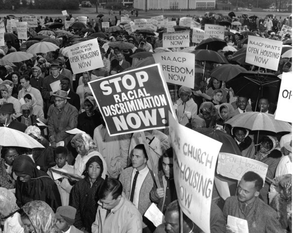
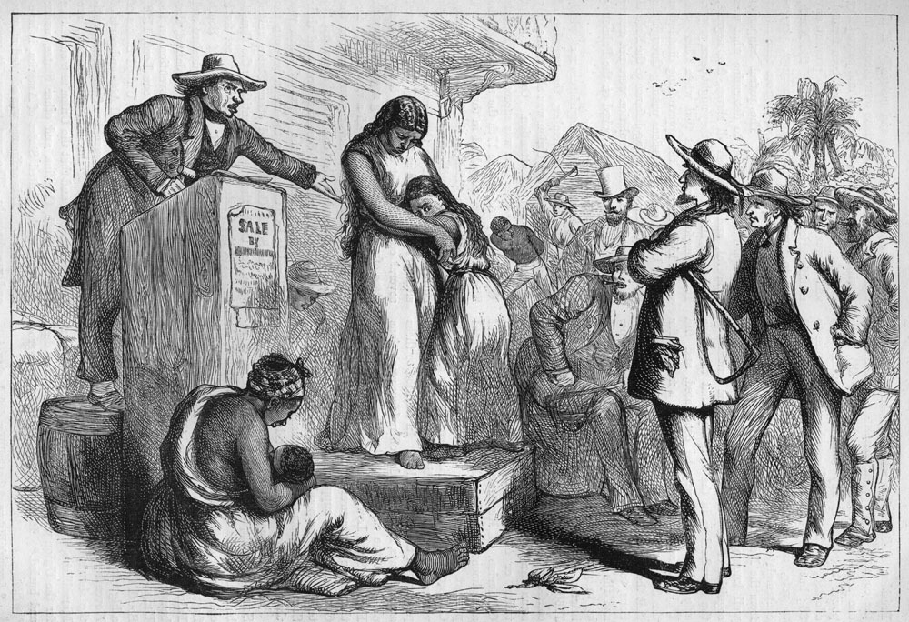
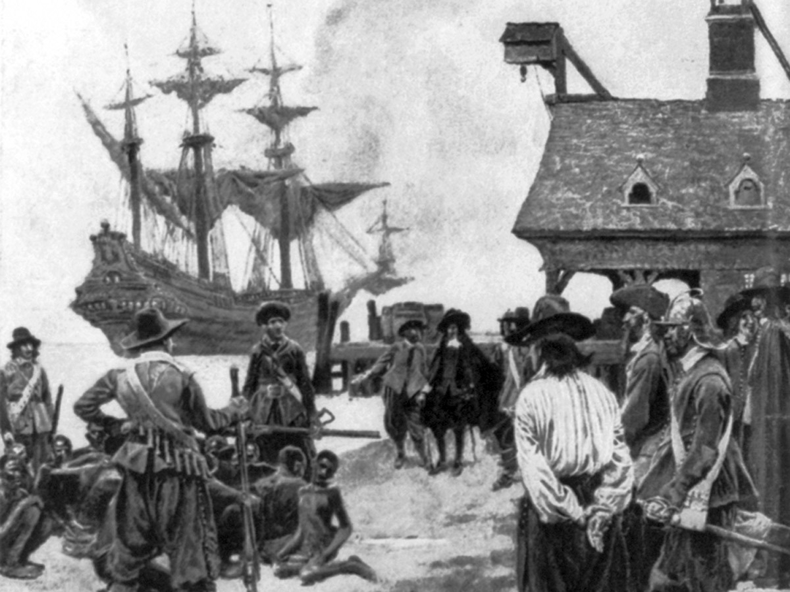
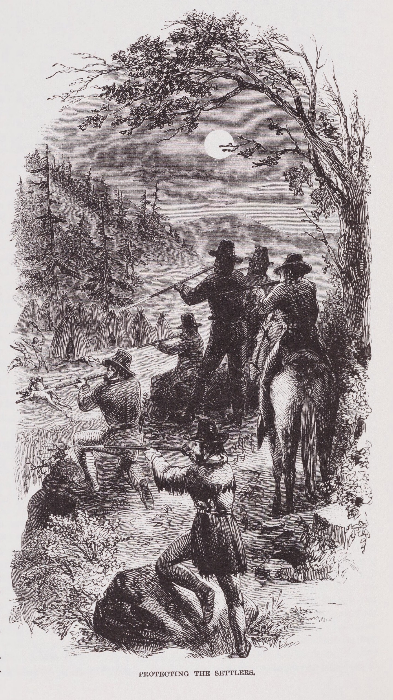
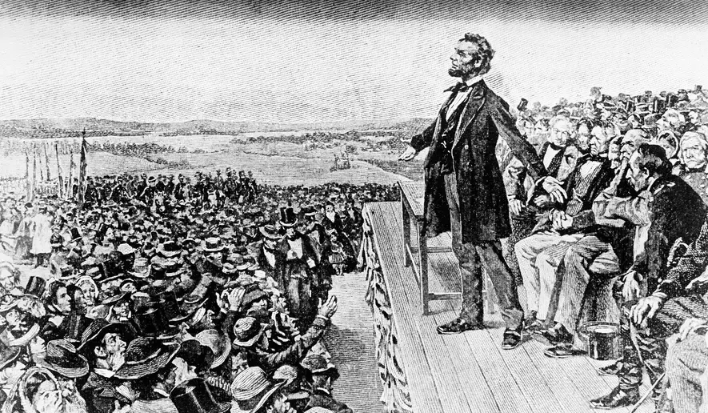
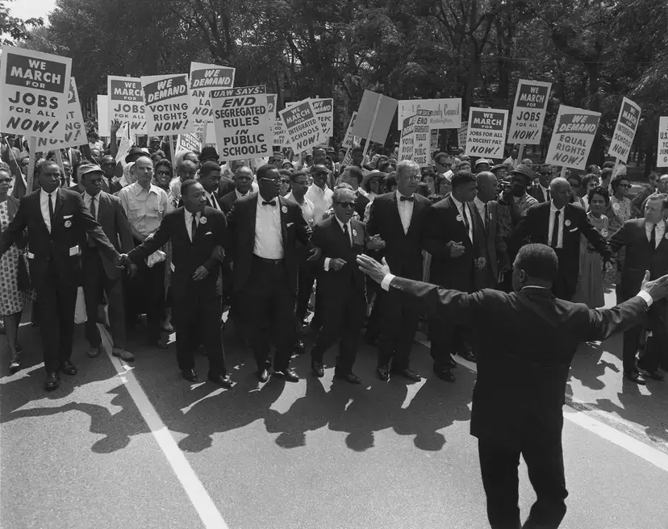
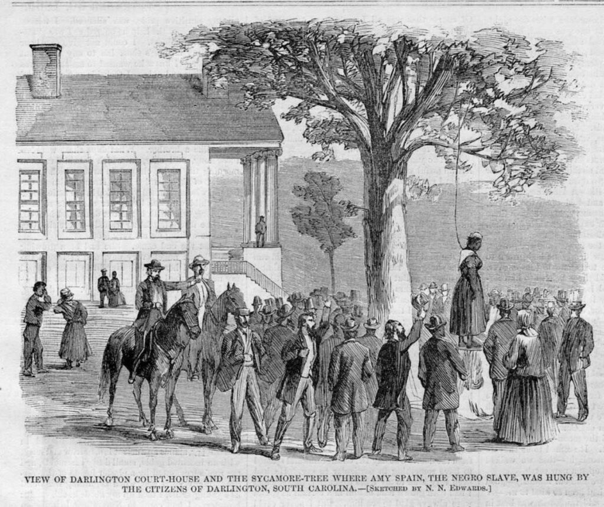

Racial Discrimination is characterized by legally and socially-sanctioned privilege for White Americans and systemic disadvantages for various minority groups, including African Americans, Native Americans, Hispanics, and others, manifesting through slavery, Jim Crow laws, lynchings, discriminatory housing policies like redlining, forced removals, internment camps, and unequal access to education and economic opportunities.
Beginning in 1619, the first enslaved Africans were brought to the English colonies in North America, initiating a system of chattel slavery that lasted for 246 years, treating people as property.
European colonization led to the genocide, massacres, and forced removals of Native Americans, with forced enrollment in boarding schools being a significant part of this history.
Following the Civil War and the abolition of slavery, Southern states enacted "Jim Crow" laws that mandated segregation in public facilities, including schools and transportation.
Following the Civil War and the abolition of slavery, Southern states enacted "Jim Crow" laws that mandated segregation in public facilities, including schools and transportation.
Lynchings and other forms of violence were used to intimidate and terrorize Black communities, perpetuating a system of racial control.
